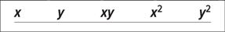

Finding
Correlation Coefficients
Step 1
Make a table as shown.

Step 2
Place the values of \(x\) in the \(x\) column and the values of \(y\) in the \(y\) column.
Multiply each \(x\) value by the corresponding \(y\) value, and place the products in the \(xy\) column.
Square each \(x\) value and place the squares in the \(x^2\) column. Square each \(y\) value and place the squares in the \(y^2\) column.
Find the sum of each column.
Step 3
Substitute in the formula and find the value for\(r\).
\[r=\frac{n\left(\sum xy\right)-\left(\sum x\right)\left(\sum y\right)}{\sqrt{\left| n\left(\sum x^2\right)-\left(\sum x\right)^2\right|\cdot\left|n\left(\sum y^2\right)-\left(\sum y\right)^2 \right|}}\]
where \(n\) is the number of data pairs.